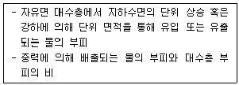
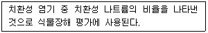
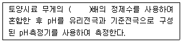
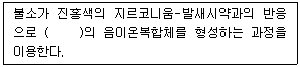
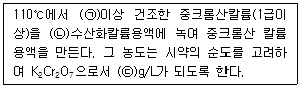
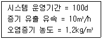
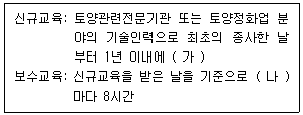

토양환경기사 (2021-05-15 기출문제)
1과목: 토양학개론
1. 휴ㆍ폐금속광산 일대에서 철 수산화물의 침전으로 강 바닥이나 주변 암석이 적갈색을 띄는 현상은?
- 블루베이비 현상
- 옐로우보이 현상
- 백화현상
- 글레이화 현상
(정답률: 75%)

2. 토양의 입단화에 관한 설명으로 가장 거리가 먼 것은?
- 미생물이 유기물을 분해하며 만들어내는 균류의 균사에 의해 입단이 형성된다.
- 식물이 수분을 흡수하면 뿌리 주위의 토양수분이 줄어 토양수축이 일어나고, 입단 형성이 억제된다.
- 양으로 하전된 점토와 음으로 하전된 점토가 서로 끌리는 현상에 의해 입단이 형성된다.
- 수화도가 큰 이온은 입단화작용이 약하고, 수화도가 작은 이온은 입단화작용이 강하다.
(정답률: 56%)
3. 다음에서 설명하는 용어는?

- 비산출률
- 비저류계수
- 수리전도도
- 비보유율
(정답률: 79%)
4. 나트륨토양의 개량방법으로 가장 거리가 먼 것은?
- 석회 자재를 투입하여 치환성 Ca포화도를 높인다.
- 토양 중의 공기를 빼내 토양을 음(-)압으로 만들어준다.
- 지하수위가 높은 경우에는 배수에 의하여 수위를 낮춘다.
- 내알칼리, 내침수성 식물을 재배하여 유기질 잔사를 포장하여 환원시킨다.
(정답률: 62%)
5. A지역에서 기름이 유출되어 500m 떨어진 B지역의 토양으로 흘러 들어갔다. A지역의 수위가 65m, B지역의 수위가 50m, 오염물질이 이동한 토양의 공극률이 40% 수리전도도가 0.01cm/s일 때, 오염물질이 A지역에서 B지역으로 실제로 이동하는데 걸리는 시간(d)은?
- 178
- 232
- 772
- 1930
(정답률: 15%)
6. 토양 중의 유기물분해에 관한 내용으로 옳지 않은 것은?
- 리그린은 당류에 비해 분해가 빠르게 일어난다.
- 유기물의 분해는 혐기성조건보다 호기성조건에서 빠르게 일어난다.
- 탄질률이 큰 유기물은 탄질률이 작은 유기물에 비해 분해가 느리게 일어난다.
- 토양 공극의 약 60%가 물로 채워져 있을 때 산소의 유통이 원활할 뿐만 아니라 미생물의 활성에 필요한 수분도 적절하게 공급할 수 있다.
(정답률: 77%)
7. 다음 중 2:1형 점토광물에 해당하는 것은?
- Vermiculite
- Kaolinite
- Halloysite
- Nacrite
(정답률: 83%)
8. 다음 토양오염물질 중 DNAPL에 해당하지 않는 것은?
- TCE
- 클로로페놀
- 1,1,1,-TCA
- 톨루엔
(정답률: 66%)
9. 토양의 양이온교환용량에 관한 설명으로 옳지 않은 것은?
- 일반적으로 점토 함량이 높은 토양의 양이온교환용량이 높다.
- 양이온교환용량이 클수록 토양이 양분을 보유할 수 있는 능력이 감소한다.
- 모래와 미사는 표면적이 매우 작아 토양의 양이온교환용량에 거의 기여하지 않는다.
- 토양의 양이온교환용량은 무기 또는 유기콜로이드가 흡착할 수 있는 양이온의 총량이다.
(정답률: 76%)
10. 토양의 수직단면 성층구조를 나타내는 토양층위에 해당하지 않는 것은?
- O층
- D층
- C층
- A층
(정답률: 88%)
11. 토양공기에 관한 일반적인 설명으로 옳지 않은 것은?
- 수증기의 함량은 일반대기보다 높다.
- 산소의 함량은 일반대기보다 낮다.
- 아르곤의 함량은 일반대기보다 낮다.
- 이산화탄소의 함량은 일반대기보다 높다.
(정답률: 81%)
12. 토양의 용적비중이 1.17, 입자비중이 2.55일때, 토양의 공극률(%)은?
- 41.1
- 45.9
- 51.1
- 54.1
(정답률: 68%)
13. 대수층의 비보유율(Sr)이 20%이고, 총 공극률이 30%일 때, 비산출률(%)은?
- 10
- 15
- 20
- 60
(정답률: 77%)
14. 다음 중 양이온교환용량이 가장 큰 점토광물은?
- lllite
- Chlorite
- Kaolinite
- Montmorillonite
(정답률: 79%)
15. MTBE가 포화토양층에 평형상태로 용해 또는 흡착되어 있다. 지하수와 토양에서의 MTBE의 농도가 각각 200mg/L, 100mg/kg이며, 포화토양층의 부피가 500m3이다. 토양의 공극률이 20%, 입자밀도가 2.75g/cm3일 때, 토양에 흡착된 MTBE양(kg)과 지하수에 용해된 MTBE양(kg)을 순서대로 나열한 것은?
- 110,10
- 110,20
- 220,10
- 220,20
(정답률: 52%)
16. 포화대의 수리지질학적인 특성은 지하수의 흐름특성과 저류특성으로 구분될 수 있다. 저류특성에 해당하지 않는 것은?
- 공극률
- 비산출률
- 비저류계수
- 투수량계수
(정답률: 65%)
17. 다음에서 설명하는 용어는?

- CEC
- RSC
- TDS
- SAR
(정답률: 86%)
18. 토양오염의 일반적인 특징으로 가장 거리가 먼 것은?
- 피해발현의 긴급성
- 오염경로의 다양성
- 오염영향의 국지성
- 지속성 및 잔류성
(정답률: 88%)
19. 토양이 산성화될 때 양이온교환용량과 염기포화도의 변화에 관한 설명으로 옳은 것은?
- 양이온교환용량과 염기포화도가 모두 증가한다.
- 양이온교환용량과 염기포화도가 모두 감소한다.
- 양이온교환용량은 감소하나 염기포화도는 변화가 없다.
- 양이온교환용량은 변화가 없으나 염기포화도는 감소한다.
(정답률: 68%)
20. 유류오염물질의 성질에 관한 설명으로 가장 거리가 먼 것은?
- 휘발유는 윤활유보다 생분해성이 높다.
- 윤활유에는 단환고리방향족탄화수소(PAHs)가 다량 함유되어 있다.
- 디젤유가 지하대수층에 도달하면 DNAPL층을 형성한다.
- 지하저장탱크로부터 발생하는 유류오염은 누출이나 쏟아짐 등으로 인해 발생한다.
(정답률: 67%)
2과목: 토양 및 지하수 오염조사기술
21. 토양 분석을 위하여 진한 염산(12N)으로 0.1N의 염산 250mL을 만들고자 한다. 필요한 진한 염산(12N)의 양(mL)은?
- 1.5
- 2.1
- 3.4
- 5.2
(정답률: 54%)
22. 유리전극법에 따라 토양의 pH를 측정할 때에 관한 내용이다. ( )안에 알맞은 말은?

- 5
- 10
- 15
- 20
(정답률: 80%)
23. 광산활동 지역에 대해 상세조사를 수행하기 위해 30개의 지점에서 표토시료를 채취하였다. 조사지역의 최대 오염토양면적(m2)은?
- 30000
- 45000
- 67500
- 135000
(정답률: 66%)
24. 수소화물생성-유도결합플라스마-원자발광분광법에 따라 토양 중의 비소를 분석할 때, 토양 내에 고농도(4000mg/L이상)로 존재하여 화학적 간섭을 일으키는 물질에 해당하지 않은 것은?
- 니켈
- 아연
- 수은
- 코발트
(정답률: 47%)
25. 토양오염 위해성평가 단계에 해당하지 않은 것은?
- 노출평가
- 독성평가
- 유해성 결정
- 오염범위 및 노출농도 결정
(정답률: 56%)
26. 저장물질이 없는 누출검사대상시설-가압시험법에 따라 시료를 분석할 때 사용하는 검사기기 및 기구에 관한 기준으로 옳지 않은 것은?
- 안전밸브 : 0.7kgf/cm2이하에서 작동되어야 한다.
- 가압장치 : 불활성가스 용기 및 압력조정장치를 말한다.
- 온도계 : 시험압력에 충분히 견딜 수 있는 것으로 최소눈금 1℃이하를 읽고 기록이 가능하여야 한다.
- 압력계(압력자기기록계) : 최소눈금이 시험압력의 30%이내이고 이를 읽고 측정압력의 기록이 가능하여야 한다.
(정답률: 77%)
27. 기체크로마토그래피 검출기 중 유기질수 화합물 및 유기인 화합물을 선택적으로 검출할 수 없는 것은?
- 열전도도검출기(TCD)
- 질소인검출기(NPD)
- 불꽃광도검출기(FPD)
- 전자포착검출기(ECD)
(정답률: 38%)
28. 유도결합플라스마-원자발광분광법에 따라 토양 중의 중금속을 분석할 때, 광학간섭이 발생할 경우에 해당하지 않는 것은?
- 파장의 스펙트럼선이 넓어질 경우
- 원소가 동일 파장에서 발광할 경우
- 이온과 원자의 재결합으로 연속발광할 경우
- 원자가 산화 또는 환원하여 이온화합물을 형성할 경우
(정답률: 63%)
29. 자외선/가시선 분광법에 따라 토양 중의 불소를 측정할 때에 관한 내용이다. ( )안에 알맞은 말은?

- 적색
- 청색
- 황갈색
- 무색
(정답률: 74%)
30. 정도관리요소인 검정곡선을 작성하는 방법 중 상대검정곡선법에 관한 내용이다. ( )안에 알맞은 말은?(문제 복원 오류로 지문이 없습니다. 정확안 지문 내용을 아시는분 께서는 오류신고를 통하여 내용 작성 부탁 드립니다. 정답은 1번 입니다.)
- 유사하며 시료에는 없는
- 유사하며 시료에 함유된
- 다르며 시료에 함유된
- 다르며 시료에는 없는
(정답률: 78%)
31. 원자흡수분광광도계를 사용하여 염화제일주석용액에 의해 원자상태로 환원시켜 정량하는 시료는?
- 납
- 구리
- 아연
- 수은
(정답률: 66%)
32. 수소화물생성-원자흡수분광광도법에 따라 토양 중의 비소 함량을 분석할 때 사용하는 요오드화칼륨과 아스코르빈산의 역할은?
- 시료 중의 비소를 3가비소로 환원
- 시료 중의 비소를 6가비소로 산화
- 시료 중의 비소를 비화수소로 환원
- 시료 중의 비소를 비화수소로 산화
(정답률: 75%)
33. 누출검사대상시설 중 “부속배관”에 관한 설명으로 옳은 것은?
- 누출검사대상시설에 용접 또는 나사조임 방식으로 직접 연결되는 배관을 말한다.
- 지하매설저장시설에 연결되어 누출여부의 판단이 어려운 배관을 말한다.
- 지하에 매설되어 누출여부를 육안으로 직접 확인할 수 없는 배관을 말한다.
- 액체의 누출여부를 누출검사대상시설 외부에서 직접 또는 간접적으로 확인하기 위하여 설치된 배관을 말한다.
(정답률: 78%)
34. 토양오염관리대상시설지역의 시료채위 및 보관방법에 관한 내용으로 옳은 것은?
- 오염의 개연성이 판단되지 않을 경우 제일 상부의 토양 20cm를 시료부위로 한다.
- 시료채취봉을 꺼내어 오염의 개연성이 가장 낮다고 판단되는 부위 ±10cm를 시료부위로 한다.
- 토양을 시추할 때는 토양오염관리대상시설 관계자의 의견을 들어 지하매설시설 등이 손상되지 않도록 주의한다.
- 토양시료는 직경 5cm이하의 시료채취봉이 들어있는 타격식이나 나선형식의 토양시추장비로 채취한다.
(정답률: 75%)
35. 자외선/가시선 분공법에 따라 토양 중의 시안을 분석할 때 사용하는 인산이수소칼륨 34g과 무수인산일수소나트륨 35.5g을 정제수에 녹여 1L로 한 용액의 이름은?
- 인산탄산염 완충액
- 인산염 완충액(pH:6.8)
- 무수인산나트륨 완충액
- 인산이수소칼륨 완충액(pH:9.0)
(정답률: 63%)
36. 저장물질이 없는 누출검사대상시설-가입시험법에 따라 시험을 수행할 때 판정기준은?
- 압력강하가 시험압력의 1%를 초과하는 경우에는 불합격으로 한다.
- 압력강하가 시험압력의 5%를 초과하는 경우에는 불합격으로 한다.
- 압력강하가 시험압력의 10%를 초과하는 경우에는 불합격으로 한다.
- 압력강하가 시험압력의 15%를 초과하는 경우에는 불합격으로 한다.
(정답률: 71%)
37. 토양오염공정시험기준 총칙의 내용으로 옳지 않은 것은?
- 감압 또는 진공이라 함은 따로 규정이 없는 한 15mmHg이하를 말한다.
- 가스체의 농도는 표준상대(0℃, 1기압, 상대습도 0%)로 환산하여 표시한다.
- 제반 시험 조작은 따로 규정이 없는 한 실온에서 실시하고 조작 직후 그 결과를 관찰하는 것으로 한다.
- “항량으로 될 때까지 건조한다”라 함은 같은 조건에서 1시간 더 건조할 때 전후 무게차가 g당 0.3mg이하일 때를 말한다.
(정답률: 57%)
38. 퍼기-트랩 기체크로마토그래피법에 따라 토양 중의 BTEX를 분석할 때에 관한 내용으로 옳지 않은 것은?
- 간섭물질이 발견되면 증류하거나 정제컬럼에 의해 제거한다.
- 원심분리기는 4℃이하에서 원심분리가 가능하여야 한다.
- 시료 중의 BTEX를 헥산 또는 사염화탄소로 추출하여 검액을 얻는다.
- 시험관에 채취된 시료를 즉시 실험할 수 없는 경우에는 0~4℃의 냉암소에서 보존하고 14일이내에 분석에 사용하여야 한다.
(정답률: 55%)
39. 몇 년마다 토양오염공정시험기준의 타당성을 검토하고 개선 등의 조치를 취하여야 하는 가?
- 1
- 2
- 3
- 5
(정답률: 41%)
40. 자외선/가시선 분광법에 따라 시료를 분석할 경우 흡광도의 눈금 보정 방법에 관한 설명이다. ( )안에 알맞은 말은?

- ㉠ 2시간 ㉡ N/20 ㉢ 0.0303
- ㉠ 3시간 ㉡ N/20 ㉢ 0.0303
- ㉠ 3시간 ㉡ N/10 ㉢ 0.0303
- ㉠ 3시간 ㉡ N/20 ㉢ 0.1303
(정답률: 69%)
3과목: 토양 및 지하수 오염정화 기술
41. 일반적으로 유기화학물질의 생분해능은 화합물의 분자구조에 의해 크게 좌우된다. 다음 중 생분해기능이 가장 높은 화합물은?
- 할로겐화된 화합물
- 가지구조가 많은 화합물
- 원자의 전하차가 작은 화합물
- 물에 대한 용해도가 낮은 화합물
(정답률: 71%)
42. 생물학적 복원기법에서는 호기성 조건을 형성하기 위하여 산소를 주입하여야 한다. 적정한 산소주입 방법에 해당하지 않는 것은?
- 압축산소 주입
- 대기 중의 공기 주입
- 과산화질소(N2O2) 주입
- 과산화수소(H2O2) 주입
(정답률: 57%)
43. 바이오스파징(Biosparging)에 관한 내용으로 가장 거리가 먼 것은?
- 지하수의 부가적인 처리가 필요 없다.
- 오염물질이 확산될 가능성이 낮다.
- 지상의 영업이나 활동에 방해받지 않고 정화작업을 수행할 수 있다.
- 생분해가 주요 제거 메커니즘이므로 배출가스의 처리가 필요없을 수 있다.
(정답률: 56%)
44. 열탈착기술에 관한 설명으로 옳지 않은 것은?
- 중금속으로 오염된 토양을 처리하는 데에는 부적합하다.
- 유기염소와 유기인 살충제를 검출한계 이하까지 제거할 수 있다.
- 같은 용량의 소각 공정에 비해 발생하는 가스량이 상대적으로 적다.
- 다양한 수분함량과 오염농도를 가진 여러 종류의 토양에 적용이 가능하다.
(정답률: 48%)
45. 오염된 토양을 세척기법으로 정화 처리할 때, 작업절차를 순서대로 나열한 것은?
- 토사굴착-토사입자분리-토사전처리-조립자처리-세립자처리-오염수처리-잔류물처리
- 토사굴착-토사전처리-토사입자분리-조립자처리-세립자처리-오염수처리-잔류물처리
- 토사굴착-토사전처리-조립자처리-세립자처리-토사입자처리-오염수처리-잔류물처리
- 토사굴착-토사전처리-오염수처리-토사입자분리-조립자처리-세립자처리-잔류물처리
(정답률: 54%)
46. 열처리기법의 일종으로 4000℃ 고온에서 이온화된 가스를 이용하여 오염토양을 마그마와 같이 용융시켜 유리화시키는 기법은?
- 전기저항가열기법
- 무선주파수기법
- 플라즈마기법
- 전기스팀기법
(정답률: 75%)
47. 열탈착공정의 일반적인 구성장치에 해당하지 않는 것은?
- 열 교환기
- 열 건조기
- 발열반응기
- 고에너지 스크러버
(정답률: 54%)
48. 매립지토양에서 100g의 glucose(CδH12Oδ)가혐기성 조건에서 분해되었다. 토양층에서 발생하는 메탄가스의 부피(L)는? (단, 토양층에서 발생하는 메탄가스 1mol의 부피는 25L라 가정)
- 22
- 32
- 36
- 42
(정답률: 20%)
49. 자연저감법에 관한 설명으로 옳지 않은 것은?
- 수은과 같은 무기물질은 비유동성이며 잘 분해되지 않는다.
- 오염물질의 농도가 감소할 때까지는 오염현장을 재사용할 수 없다.
- 장기간 모니터링으로 인해 다른 기술을 적용할 때보다 비용이 많이 소요될 수 있다.
- 자연저감 기간 중 시스템 내 물리ㆍ화학적 특성변화가 발생하여 오염물질이 확산될 우려가 없다.
(정답률: 59%)
50. 투수성 반응벽체에 관한 내용으로 옳지 않은 것은?
- 오염지역 밖으로 지하수의 이동을 막는다.
- 미생물의 과대증식으로 인한 막힘 현상이 있다.
- 영가철은 2가철로 산화되면서 염소계 화합물의 탈염소반응을 일으킨다.
- 오염물질을 처리지대로 이동시키는 자연유하에 의존하기 대문에 반응벽체의 운영을 위한 인위적 동력이 필요하지 않다.
(정답률: 52%)
51. 생물학적 처리를 위해 조절되어야 할 인자로 가장 거리가 먼 것은?
- 전자수용체
- 질소와 인
- 칼륨과 철
- 미생물 성장에 필요한 pH
(정답률: 49%)
52. 토양의 고형화ㆍ안정화 처리에 사용되는 무기접착제에 해당하지 않는 것은?
- 석회
- 점토
- 아스팔트
- 제울라이트
(정답률: 50%)
53. 중금속으로 오염된 토양을 고형화/안정화 처리할 때에 관한 내용으로 옳지 않은 것은?
- 폐석이나 암석들은 공정 전에 제거되어야 한다.
- 평균 입자크기를 증가시켜 입자의 확산을 감소시킨다.
- 부수적인 희석을 제외하고 금속의 총 함량 감소는 없다.
- 결합제의 수화반응으로 휘발성물질의 제어가 가능하다.
(정답률: 56%)
54. 오염토양 20000mg/kg을 열탈착반응조에 투입하여 처리하고자 한다. 오염물질이 0차반응에 의해 분해될 경우, 오염물질을 모두 제기하는 데 소요되는 시간(min)은? (단, 속도상수는 4mol/kgㆍh, 오염물질의 분자량은 10g/mol)
- 20
- 30
- 120
- 180
(정답률: 38%)
55. 화학적 산화ㆍ환원법에 관한 내용으로 가장 거리가 먼 것은?
- 오염물질을 원위치에서 정화할 수 있다.
- 자연정화법과 연계하여 사용할 수 있다.
- 산화제로 오존, 과망간산이온, 철/과산화수소 등이 사용된다.
- 부지 내에 존재하는 NAPL를 효과적으로 제거할 수 있다.
(정답률: 60%)
56. 운영조건이 다음과 같을 때, 도양증기추출법에 의한 누적 오염물질의 저감량(kg)은?

- 28800
- 23500
- 18200
- 15500
(정답률: 67%)
57. 동전기정화기술을 적용하여 오염물질을 처리할 때 발생하는 현상과 가장 거리가 먼 것은?
- 전기이동
- 전기영동
- 전기삼투
- 전기역전
(정답률: 71%)
58. 토양증기추출기법에 관한 내용으로 옳지 않은 것은?
- 주금속, PCB로 오염된 토양의 정화에는 부적합하다.
- 헨리상수가 0.01이상인 휘발성오염물질에 적용하는 것이 효과적이다.
- 유기물함량이 높은 토양은 VOC의 흡착능력이 낮아 제거효율이 높다.
- 미세토양이나 수분함량이 높은 토양은 공기의 투과성이 낮으므로 증기압을 높여야 한다.
(정답률: 56%)
59. Bioventing 공정에 주입되는 공기 유량이 200m3/d, 초기산소농도가 20.9%, 배기가스 중의 산소농도가 5.9%, 토양 체적이 5000m3 토양의 공극률이 15%일 때, 평균 산소 소모율(%O2/d)은?
- 1
- 2
- 3
- 4
(정답률: 56%)
60. 토양경작법에 관한 설명으로 옳지 않은 것은?
- 무기물질의 처리에 효과적이다.
- 대기오염물질이 발생하므로 최종방출 전에 처리해야 한다.
- 고농도의 중금속으로 오염된 토양의 처리에는 비효율적이다.
- 휘발성유기물질의 농도는 생분해보다 휘발에 의해 감소된다.
(정답률: 67%)
4과목: 토양 및 지하수 환경관계법규
61. 토양환경보전법령상 대책지역에 대한 토양보전대책에 관한 계획에 포함되어야 하는 사항에 해당하지 않는 것은?
- 토양오염도 조사
- 오염토양 개선사업
- 토지 등의 이용 방안
- 주민건강 피해조사 및 대책
(정답률: 17%)
62. 토양환경보전법령상의 용어 정의로 옳지 않은 것은?
- 토양처리업 : 토양을 적절한 방법으로 정화 처리하는 업을 말한다.
- 토양오염물질 : 토양오염의 원인이 되는 물질로서 환경부령으로 정하는 것을 말한다.
- 토양오염 : 사업활동이나 그 밖의 사람의 활동에 의하여 토양이 오염되는 것으로서 사람의 건강ㆍ재산이나 환경에 피해를 주는 상태를 말한다.
- 특정토양오염관리대상시설 : 토양을 현저하게 오염시킬 우려가 있는 토양오염관리대상시설로서 환경부령으로 정하는 것을 말한다.
(정답률: 61%)
63. 지하수의 수질기준 항목 중 특정유해물질에 해당하지 않는 것은?
- 비소
- 톨루엔
- 염소이온
- 트리클로로에틸렌
(정답률: 65%)
64. 토양환경보전법령상 위해성평가에 관한 내용으로 옳지 않은 것은?
- 현재 위해성평가 대상 중금속류 물질은 카드뮴, 구리, 비소, 수은, 납, 6가크롬, 아연, 니켈이다.
- 위해성평가서의 요약본을 해당 기관의 인터넷홈페이지 등에 20일이상 공고하고 위해성 평가대상 오염토양으로 영향을 받게되는 지역의 주민이 위해성평가서를 공람할 수 있도록 해야 한다.
- 환경부장관이 위해성평가서를 검증하는 경우 기술적 사항을 검토하기 위하여 국립환경과 학원 또는 한국환경공단의 의견을 들을 수 있다.
- 위해성평가의 결과를 토영정화의 시기에 반영하려는 경우 위해성평가의 최초검증 후 2년마다 위해성평가기관으로 하여금 대상지역에 대한 오염토양 모니터링을 실시하도록 해야한다.
(정답률: 49%)
65. 다음 중 토양환경보전법령상 토양오염도 검사수수료가 가장 비싼 검사항목은?
- 불소
- 비소
- 수은
- 유기인
(정답률: 79%)
66. 토양환경보전법령상 토양정화업자의 준수사항으로 옳지 않은 것은?
- 기술인력은 해당분야에 종사하게 해야 한다.
- 토양정화업자는 매년 12월31일까지 토양정화실적을 시ㆍ도지사에게 보고해야 한다.
- 정화현장에 오염토양의 정화공정도 및 정화일지를 작성하여 비치하고, 정화일지는 2년간 보관해야 한다.
- 토양관련전문기관의 정화검증을 위한 정화현장 방문, 시료의 채취 등 검증 업무수행을 방해해서는 아니된다.
(정답률: 70%)
67. 토양환경보전법령상 보관, 운반 및 정화 등의 과정에서 오염토양을 누출ㆍ유출시킨 자에 대한 벌칙 기준은?
- 3백만원 이하의 벌금
- 5백만원 이하의 벌금
- 1년 이하의 징역 또는 1천만원 이하의 벌금
- 2년 이하의 징역 또는 2천만원 이하의 벌금
(정답률: 68%)
68. 토양환경평가기관으로 지정받기 위하여 필요한 기술인력에 관한 내용으로 옳지 않은 것은?
- 해당 분야 기사 1명이상
- 해당 분야 산업기사 2명이상
- 해당 분야 박사 또는 기술사 1명이상
- 「고등교육법」에 따른 학교의 해당 분야 졸업자 또는 이와 동등 이상의 자격이 있는 사람 1명이상
(정답률: 36%)
69. 토양환경보전법령상 특정토양오염관리 대상시설의 토양오염도검사에 관한 내용으로 옳지 않은 것은?
- 매년 1회 환경부령으로 정하는 때에 토양관련전문기관으로부터 토양오염도검사를 받아야한다.
- 토양관련전문기관은 검사신청서를 받은 날로부터 30일이내에 시료채취를 해야한다.
- 토양오염방지시설을 설치하고 적정하게 유지ㆍ관리하고 있는 경우에는 검사주기를 5년의 범위에서 조정할 수 있다.
- 누출검사대상시설을 설치한 후 10년이 경과하였을 때에는 6개월이내에 토양관련 전문기관으로부터 누출검사를 받아야 한다.
(정답률: 60%)
70. 지하수보전구역에 설치된 지하수오염 유발시설에 해당하지 않는 것은?
- 폐기물관리법 시행령에 따른 소각시설
- 폐기물관리법 시행령에 따른 매립시설
- 물환경보전법 시행규칙에 따른 폐수배출시설
- 토양환경보전법 시행규칙에 따른 특정토양오염관리대상시설
(정답률: 60%)
71. 지하수법령상의 용어 정의로 옳지 않은 것은?
- “지하수”는 지하의 지층이나 암석사이의 빈틈을 채우고 있거나 흐르는 물을 말한다.
- “지하수개발ㆍ이용시공업”은 지하수 개발ㆍ이용을 위한 시설을 시공하는 사업을 말한다.
- “지하수영향조사”란 지하수가 사람의 보건 및 안전에 미치는 영향을 분석하는 조사를 말한다.
- “지하수보전구역”은 지하수의 수량이나 수질을 보존하기 위하여 필요한 구역으로 지정된 구역을 말한다.
(정답률: 65%)
72. 토양환경보전법령상 토양정화업에 등록하기 위해 구비하여야하는 장비에 해당하지 않는 것은?
- 지하수위측정기
- 깊이 6미터이하 채취가 가능한 시료채취기 1대
- 휘발성유기화합물질, 산소, 이산화탄소, 메탄의 측정이 가능한 휴대용 가스측정장비 1식
- pH, 수온, 전기전도도, 용존산소, 산화환원전위의 측정이 가능한 현장용 수질측정기 1식
(정답률: 43%)
73. 토양환경보전법령상 토양오염물질에 해당하지 않는 것은?
- 구리 및 그 화합물
- 망간 및 그 화합물
- 벤조(a)피렌
- 불소화합물
(정답률: 39%)
74. 토양환경보전법령상 기술인력의 토양환경관리 교육과정 이수에 관한 내용이다. ( )안에 알맞은 말은?

- 가: 12시간, 나: 3년
- 가: 18시간, 나: 3년
- 가: 12시간, 나: 5년
- 가: 18시간, 나: 5년
(정답률: 74%)
75. 토양환경보전법령상 오염토양 개선사업에 관한 내용으로 옳지 않은 것은?
- 시장 군수ㆍ구청장은 오염토양 개선사업의 전부 또는 일부의 실시를 정화책임자에게 명할 수 있다.
- 정화책임자가 오염토양개선사업을 실시하고자 할 때에는 오염토양 개선사업 계획을 작성하여 시장ㆍ군수ㆍ구청장의 승인을 얻어야 한다.
- 대책지역이 둘 이상의 특별자치시ㆍ시ㆍ군ㆍ구에 걸쳐 있어 구분이 어려울 경우에는 관할지역별로 오염토양개선사업을 실시하여야 한다.
- 정화책임자가 존재하지 아니하거나 정화책임자에 의한 오염토양개선사업의 실시가 곤란하다고 인정될 경우에는 시장ㆍ군수ㆍ구청장이 그 오염토양개선사업을 실시할 수 있다.
(정답률: 61%)
76. 토양환경보전법령상 토양보전대책지역의 지정표지판에 기록할 내용에 해당하지 않는 것은?
- 지정일자
- 지정목적
- 지정기관 및 전화번호
- 토양보전대책지역 안에서 제한되는 행위
(정답률: 58%)
77. 토양환경보전법령상 대통령령으로 정하는 오염토양의 정화방법에 해당하지 않는 것은?
- 오염물질의 소각 등 열적 처리
- 미생물을 이용한 생물학적 처리
- 오염물질의 분해 등 방사능 처리
- 오염물질의 차단 등 물리ㆍ화학적 처리
(정답률: 71%)
78. 토양환경보전법령상 토양관련전문기관의 결격사유에 해당하지 않는 것은?
- 피성년후견인 또는 피한정후견인
- 파산선고를 받고 복권되지 아니한 자
- 토양오염조사기관으로 지정된 자가 토양정화업을 겸업하여 지정이 취소된 후 2년이 지나지 아니한 자
- 토양환경보전법을 위반하여 구류의 형을 선고받고 그 집행이 종료된 날로부터 2년이 지나지 아니한 자
(정답률: 48%)
79. 토양환경보전법령상 특별시장ㆍ광역시장ㆍ도지사 또는 시장ㆍ군수ㆍ구청장은 토양오염실태조사를 할 때 토양오염의 가능성이 큰 장소를 선정하여 조사하여야 한다. 여기에 해당하지 않는 곳은?
- 학교
- 폐금속광산
- 공장ㆍ산업지역
- 폐기물매립지역
(정답률: 82%)
80. 토양환경보전법령상 정화책임자가 둘 이상인 경우 정화책임의 가장 후순위를 가지는 자는?
- 정화책임자 중 토양오염이 발생한 토지를 소유하였던 자
- 정화책임자 중 토양오염이 발생한 토지를 현재 소유 또는 점유하고 있는 자
- 정화책임자 중 토양오염관리대상시설의 소유자와 그 소유자의 권리ㆍ의무를 포괄적으로 승계한 자
- 정화책임자 중 토양오염관리대상시설의 점유자 또는 운영자와 그 점유자 또는 운영자의 권리ㆍ의무를 포괄적으로 승계한 자
(정답률: 58%)